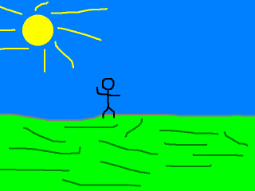
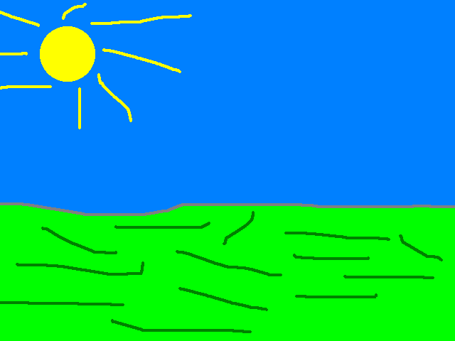

Color Keying

Last Updated 7/13/14
When rendering multiple images on the screen, having images with transparent backgrounds is usually necessary. Fortunately SDL provides an easy way to do this using color keying.//Texture wrapper class
class LTexture
{
public:
//Initializes variables
LTexture();
//Deallocates memory
~LTexture();
//Loads image at specified path
bool loadFromFile( std::string path );
//Deallocates texture
void free();
//Renders texture at given point
void render( int x, int y );
//Gets image dimensions
int getWidth();
int getHeight();
private:
//The actual hardware texture
SDL_Texture* mTexture;
//Image dimensions
int mWidth;
int mHeight;
};
For this tutorial we're going to wrap the SDL_Texture in a class to
make some things easier. For example, if you want to get certain
information about the texture such as its
width or height you would have to use some SDL functions to query the
information for the texture. Instead what we're going to do is use a
class to wrap and store the information
about the texture.
It's a fairly straight forward class in terms of design. It has a constructor/destructor pair, a file loader, a deallocator, a renderer that takes in a position, and functions to get the texture's dimensions. For member variables, it has the texture we're going to wrap, and variables to store the width/height.
It's a fairly straight forward class in terms of design. It has a constructor/destructor pair, a file loader, a deallocator, a renderer that takes in a position, and functions to get the texture's dimensions. For member variables, it has the texture we're going to wrap, and variables to store the width/height.
//The window we'll be rendering to
SDL_Window* gWindow = NULL;
//The window renderer
SDL_Renderer* gRenderer = NULL;
//Scene textures
LTexture gFooTexture;
LTexture gBackgroundTexture;
For this scene there's two textures we're going to
load here declared as "gFooTexture" and "gBackgroundTexture". We're
going to take this foo' texture:
Color key the cyan (light blue) colored background and render it on top of this background:
Color key the cyan (light blue) colored background and render it on top of this background:

LTexture::LTexture()
{
//Initialize
mTexture = NULL;
mWidth = 0;
mHeight = 0;
}
LTexture::~LTexture()
{
//Deallocate
free();
}
The constructor initializes variables and the destructor calls the deallocator which we'll cover later.
bool LTexture::loadFromFile( std::string path )
{
//Get rid of preexisting texture
free();
The texture loading function pretty much works like it did in the texture loading tutorial but with some small but
important tweaks. First off we deallocate the texture in case there's one that's already loaded.
//The final texture
SDL_Texture* newTexture = NULL;
//Load image at specified path
SDL_Surface* loadedSurface = IMG_Load( path.c_str() );
if( loadedSurface == NULL )
{
printf( "Unable to load image %s! SDL_image Error: %s\n", path.c_str(), IMG_GetError() );
}
else
{
//Color key image
SDL_SetColorKey( loadedSurface, SDL_TRUE, SDL_MapRGB( loadedSurface->format, 0, 0xFF, 0xFF ) );
Next, we color key the image with SDL_SetColorKey
before creating a texture from it. The first argument is the surface we
want
to color key, the second argument covers whether we want to enable
color keying, and the last argument is the pixel we want to color key
with.
The most cross platform way to create a pixel from RGB color is with SDL_MapRGB. The first argument is the format we want the pixel in. Fortunately the loaded surface has a format member variable. The last three variables are the red, green, and blue components for color you want to map. Here we're mapping cyan which is red 0, green 255, blue 255.
The most cross platform way to create a pixel from RGB color is with SDL_MapRGB. The first argument is the format we want the pixel in. Fortunately the loaded surface has a format member variable. The last three variables are the red, green, and blue components for color you want to map. Here we're mapping cyan which is red 0, green 255, blue 255.
//Create texture from surface pixels
newTexture = SDL_CreateTextureFromSurface( gRenderer, loadedSurface );
if( newTexture == NULL )
{
printf( "Unable to create texture from %s! SDL Error: %s\n", path.c_str(), SDL_GetError() );
}
else
{
//Get image dimensions
mWidth = loadedSurface->w;
mHeight = loadedSurface->h;
}
//Get rid of old loaded surface
SDL_FreeSurface( loadedSurface );
}
//Return success
mTexture = newTexture;
return mTexture != NULL;
}
After color keying the loaded surface, we create a
texture from the loaded and color keyed surface. If the texture was
created successfully, we store the width/height of the texture
and return whether the texture loaded success fully.
void LTexture::free()
{
//Free texture if it exists
if( mTexture != NULL )
{
SDL_DestroyTexture( mTexture );
mTexture = NULL;
mWidth = 0;
mHeight = 0;
}
}
The deallocator simply checks if a texture exists, destroys it, and reinitializes the member variables.
void LTexture::render( int x, int y )
{
//Set rendering space and render to screen
SDL_Rect renderQuad = { x, y, mWidth, mHeight };
SDL_RenderCopy( gRenderer, mTexture, NULL, &renderQuad );
}
Here you see why we needed a wrapper class. Up
until now, we've been pretty much been rendering full screen images so
we didn't need to specify position. Because we didn't need to
specify position, we just called SDL_RenderCopy with the last two
arguments as NULL.
When rendering a texture in a certain place, you to specify a destination rectangle that sets the x/y position and width/height. We can't specify the width/height without knowing the original image's dimensions. So here when we render our texture we create a rectangle with the position arguments and the member width/height, and pass in this rectangle to SDL_RenderCopy.
When rendering a texture in a certain place, you to specify a destination rectangle that sets the x/y position and width/height. We can't specify the width/height without knowing the original image's dimensions. So here when we render our texture we create a rectangle with the position arguments and the member width/height, and pass in this rectangle to SDL_RenderCopy.
int LTexture::getWidth()
{
return mWidth;
}
int LTexture::getHeight()
{
return mHeight;
}
These last member functions allows us to get the width/height when we need them.
bool loadMedia()
{
//Loading success flag
bool success = true;
//Load Foo' texture
if( !gFooTexture.loadFromFile( "10_color_keying/foo.png" ) )
{
printf( "Failed to load Foo' texture image!\n" );
success = false;
}
//Load background texture
if( !gBackgroundTexture.loadFromFile( "10_color_keying/background.png" ) )
{
printf( "Failed to load background texture image!\n" );
success = false;
}
return success;
}
Here are the image loading functions in action.
void close()
{
//Free loaded images
gFooTexture.free();
gBackgroundTexture.free();
//Destroy window
SDL_DestroyRenderer( gRenderer );
SDL_DestroyWindow( gWindow );
gWindow = NULL;
gRenderer = NULL;
//Quit SDL subsystems
IMG_Quit();
SDL_Quit();
}
And here are the deallocators.
//While application is running
while( !quit )
{
//Handle events on queue
while( SDL_PollEvent( &e ) != 0 )
{
//User requests quit
if( e.type == SDL_QUIT )
{
quit = true;
}
}
//Clear screen
SDL_SetRenderDrawColor( gRenderer, 0xFF, 0xFF, 0xFF, 0xFF );
SDL_RenderClear( gRenderer );
//Render background texture to screen
gBackgroundTexture.render( 0, 0 );
//Render Foo' to the screen
gFooTexture.render( 240, 190 );
//Update screen
SDL_RenderPresent( gRenderer );
}
Here is the main loop with our textures rendering.
It's a basic loop that handles events, clears the screen, renders the
background, renders the stick figure on top of it,
and updates the screen.
An important thing to note is that order matters when you're rendering multiple things to the screen every frame. If we to render the stick figure first, the background will render over it and you won't be able to see the stick figure.
An important thing to note is that order matters when you're rendering multiple things to the screen every frame. If we to render the stick figure first, the background will render over it and you won't be able to see the stick figure.